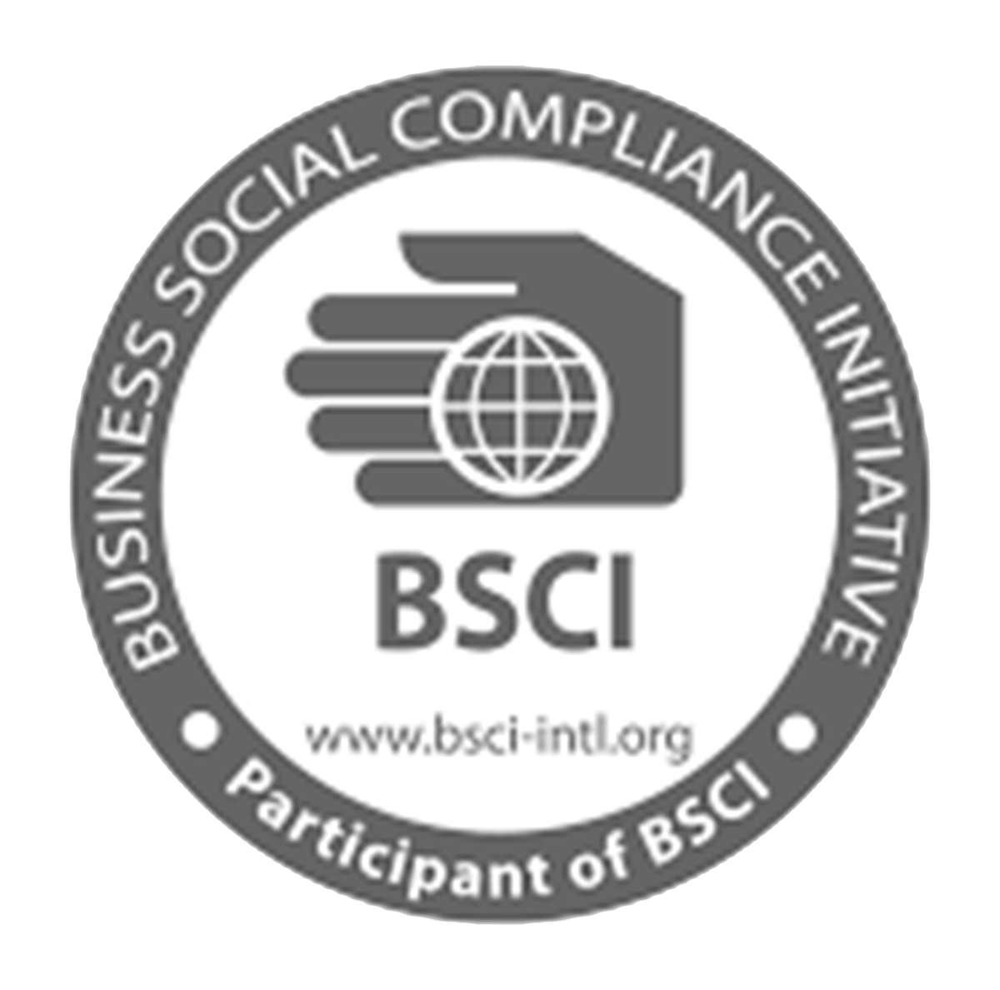

Quality & Sustainability Standards
At TEXPRO CORP, we are committed to maintaining the highest standards of quality, sustainability, and social responsibility in all our operations.
GOTS Certification
GOTS certification is the most comprehensive and credible textile product certification system towards the consumer in terms of production that respects the principles of sustainable development.
The Global Organic Textile Standard (GOTS) is recognized as the world's leading processing standard for textiles made from organic fibers. It defines high-level environmental criteria along the entire organic textiles supply chain and requires compliance with social criteria as well.

BSCI Certification
The Business Social Compliance Initiative (BSCI) is a qualification and audit system for the application of social standards in subcontracting companies.
BSCI is a leading supply chain management system that supports companies to drive social compliance and improvements within the factories and farms in their global supply chains. BSCI implements the principle international labour standards protecting workers\' rights.
RCS Certification
The Recycled Content Standard (RCS) is used to verify recycled content claims. The RCS verifies the presence and amount of recycled material in a final product. This is done through third-party verification of recycled content at each stage of the supply chain.
The RCS uses a chain of custody model that provides a strong set of management requirements from the recycled material recycler to the final product manufacturer. It allows for transparent, consistent, and comprehensive independent evaluation and verification of recycled material content claims on products.